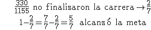
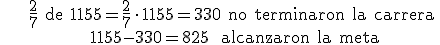
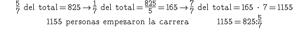
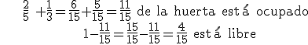
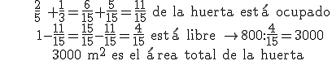
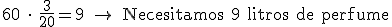
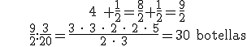
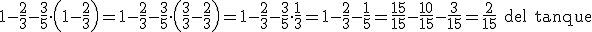

Problemas
1.- En una maratón, 1155 personas empezaron pero 330 no finalizaron los 42.195 metros de la carrera. ¿Qué fracción de corredores alcanzó la meta?

2.- En una maratón 1155 personas empezaron pero 2/7 no finalizaron los 42.195 metros de la carrera. ¿Cuántos corredores alcanzaron la meta?

3.- En una maratón, sólo 825 personas completaron los 42.195 metros de la carrera, esto es 5/7 de los corredores que empezaron la competición. ¿Cuántos empezaron la carrera?

4.- Un hortelano plantó 2/5 de la huerta con melones y 1/3 con sandías. ¿Qué parte de la huerta esta libre?

5.- Un hortelano plantó 2/5 con melones y 1/3 con sandías. Si tiene 800 m2 libres, ¿cuál es el área total de la huerta?

6.- ¿Cuántos litros necesitamos para llenar 60 botellas de perfume de 3/20 de litro cada una?

7.- ¿Cuántas botellas de 3/20 l llenaremos con 4 litros y medio de perfume?

8.- Por la mañana, sacamos 2/3 del volumen de un tanque que estaba lleno, y por la tarde sacamos 3/5 del resto. ¿Qué parte del tanque quedaba al final del día?

Ejercicios:
1.- Pedro recogió 256 castañas pero perdió ¾ camino de la escuela por un agujero en la bolsa. Cuando llegó al cole, ¿cuántas castañas le quedaban?
2.- McDonalds vende batidos de dos tamaños. El pequeño contiene 300 ml y el grande 2/3 más.
a) ¿Qué capacidad tiene el batido grande?
b) Si Andrés se bebe 2/3 de un batido pequeño y su madre 1/2 de uno grande, ¿quién ha bebido más?
3.- El lunes un jardinero podó 2/7 de sus rosales. El martes 3/5 del resto. El miércoles finalizó el trabajo podando los 20 rosales restantes. ¿Cuántos rosales tiene el jardinero?
Soluciones:1) 192 castañas; 2)a) 500 ml; b) la madre; c) 70 rosales
Obra publicada con Licencia Creative Commons Reconocimiento No comercial Compartir igual 3.0